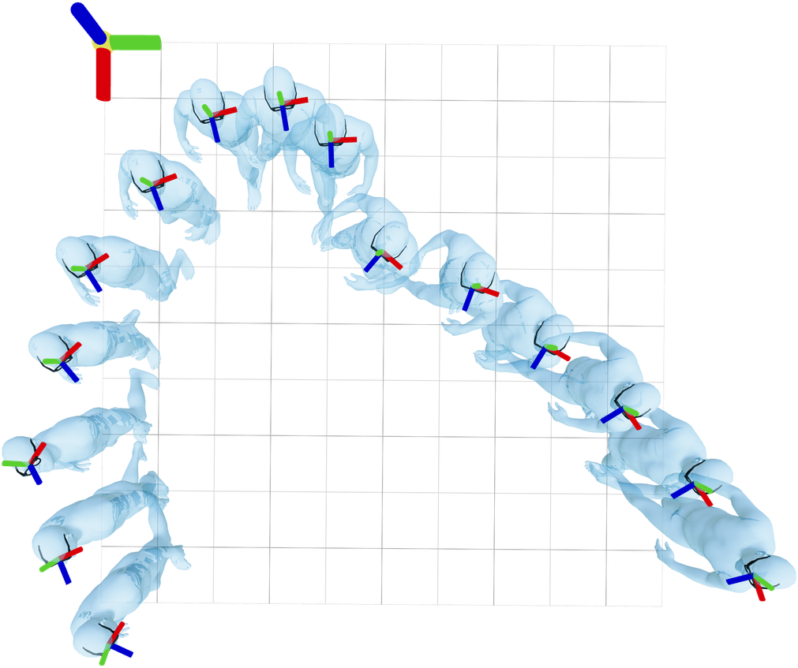
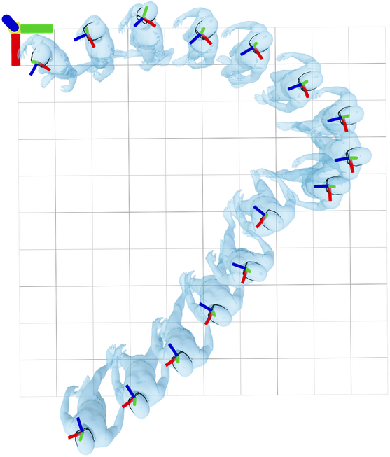
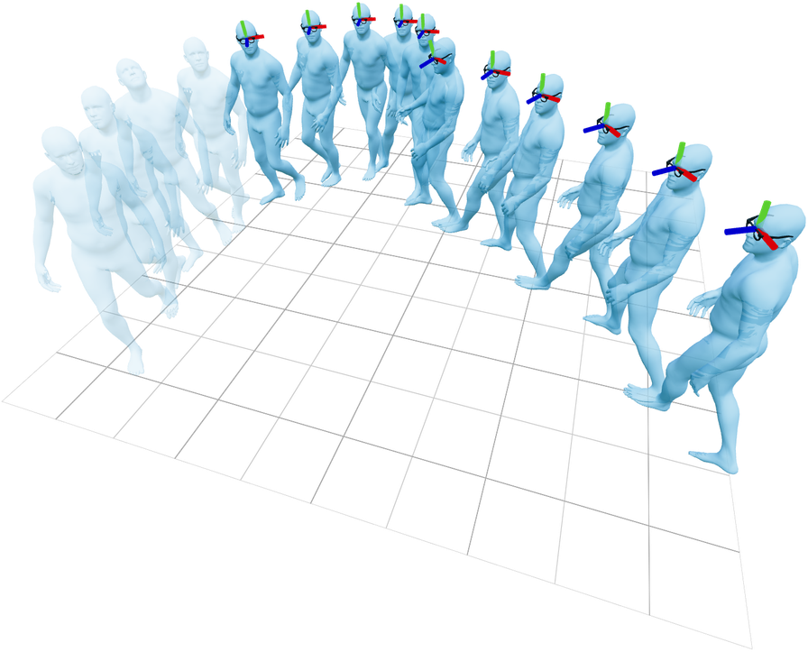
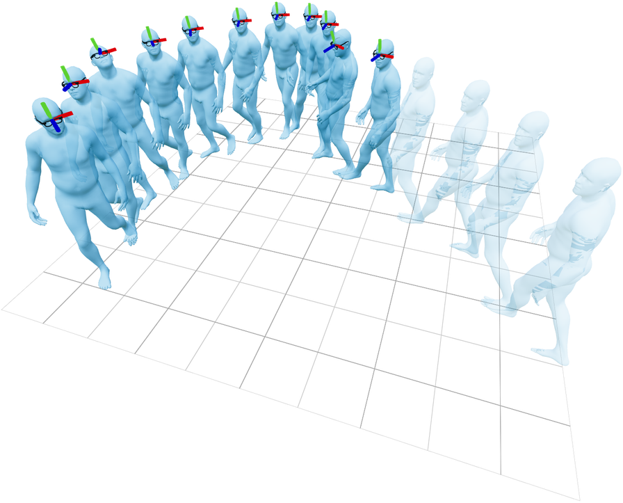
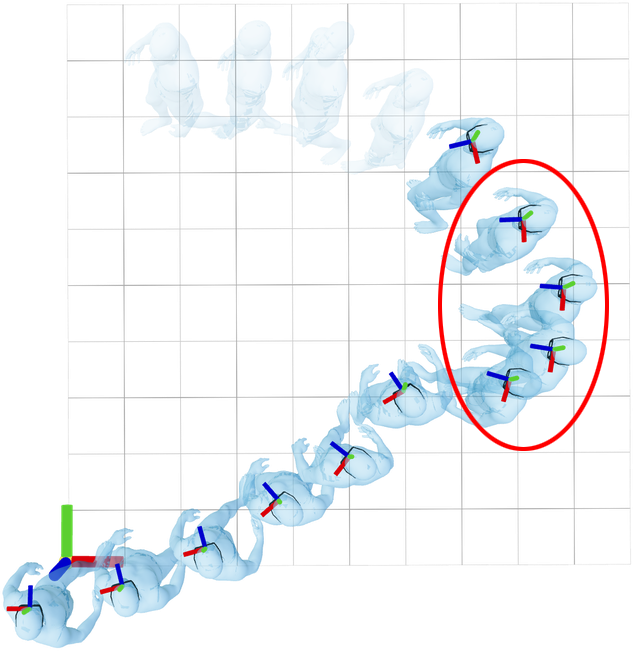
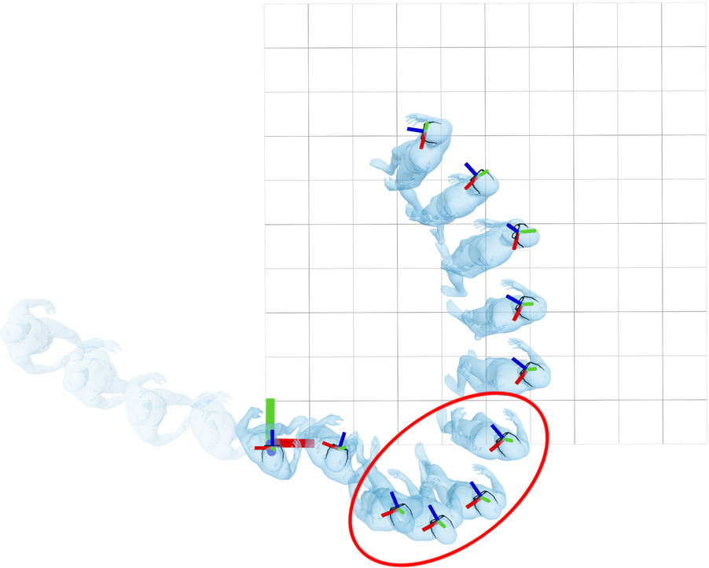
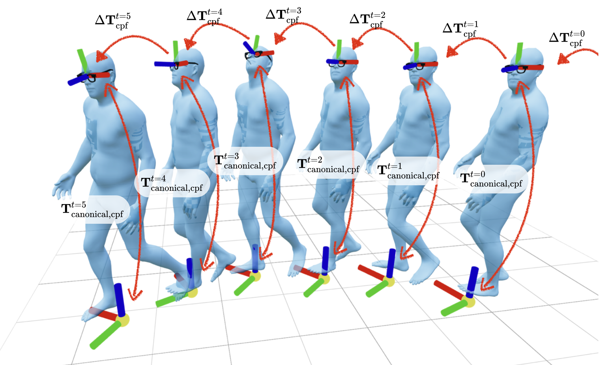
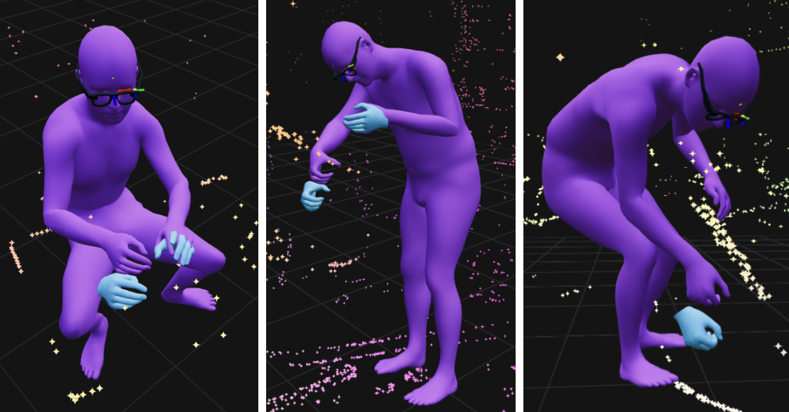

Invariant Conditioning for Learning
Our main insight for improving estimation is in conditioning
representation.
We aim to condition a human motion prior on head motion. Naively
conditioning on absolute poses, however, would introduce sensitivity to
arbitrary world frame choices. Consider these trajectories, which have
identical local body motion but completely different absolute head
poses:


Training a model using these poses as conditioning would result in poor
generalization, as inputs become susceptible to infinite possible world
frame shifts.
Prior works have solved this by aligning trajectories with their first
frame. We observe, however, that canonicalizing sequences this way leads
to sensitivity to
time. Consider two slices of the same motion:


Head poses from canonicalized sequences can still differ significantly,
even for the same body motion (circled):


This also hinders generalization: networks must "re-learn" outputs for
each slice of the input.
Motivated by this, our paper proposes (1) spatial
and temporal invariance properties that are desirable for head pose
conditioning, and (2) an alternative
parameterization that achieves them.
Using the central pupil frame (CPF) to measure head motion, our
invariant parameterization couples relative CPF motion
$\Delta\mathbf{T}_\text{cpf}^t$ with per-timestep canonicalized
pose $\mathbf{T}_{\text{canonical},\text{cpf}}^t$.

These transformations have improved invariance properties over prior
methods, while fully defining head pose trajectories relative to the
floor plane.
Quantitatively, this explains joint position estimation error
differences between 5% and 18%.
Qualitatively, we observe consistent improvements in realism. For
example, see the subtle but critical improvements in foot motion for
this dynamic sequence:
Trajectory source: EgoExo4D, unc_soccer_09-22-23_01_27.
Hand Guidance
Head motion encodes significant information about body motion, but
articulated hands require a richer input. In EgoAllo, we extract visual
hand observations using
HaMeR and
(optionally) Project Aria's
wrist and palm estimator. We then incorporate these into sampling via diffusion guidance.
We observe that jointly estimating human hands with bodies (purple) reduces ambiguities and errors when compared to single-frame
monocular estimates (blue):

Compared to naive HaMeR, EgoAllo with head pose + HaMeR input drops
world-frame hand joint errors by as much as 40%.
Acknowledgements
We would like to thank Hongsuk Choi, Michael Taylor, Tyler Bonnen,
Songwei Ge, Chung Min Kim, and Justin Kerr for insightful technical
discussion and suggestions, as well as Jiaman Li for helpful answers to
questions about EgoEgo.
This project was funded in part by NSF:CNS-2235013 and IARPA DOI/IBC No.
140D0423C0035. YM acknowledges support from the joint Simons
Foundation-NSF DMS grant #2031899, the ONR grant N00014-22-1-2102, the
NSF grant #2402951, and partial support from TBSI, InnoHK, and the
University of Hong Kong. JM was supported by ONR MURI N00014-21-1-2801.
BY is supported by the National Science Foundation Graduate Research
Fellowship Program under Grant DGE 2146752.